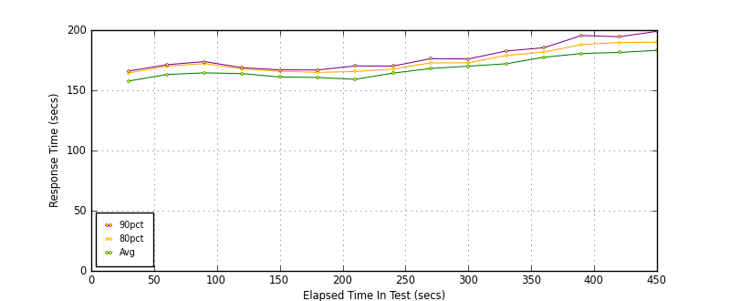
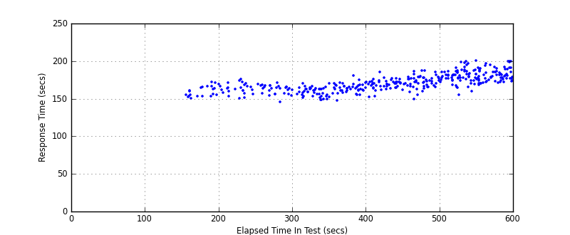
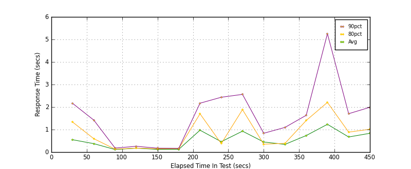
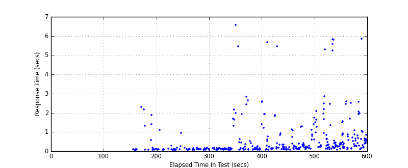
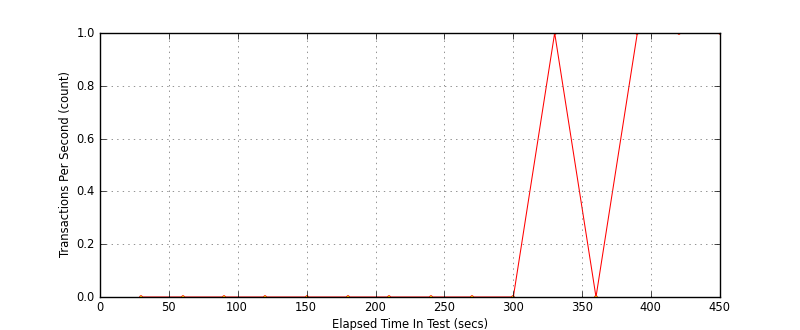
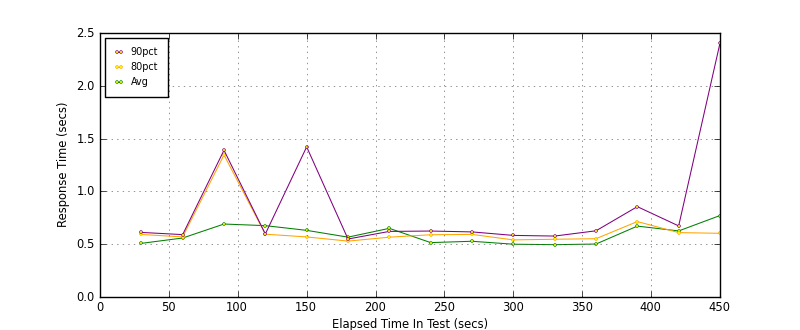
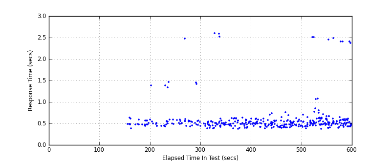
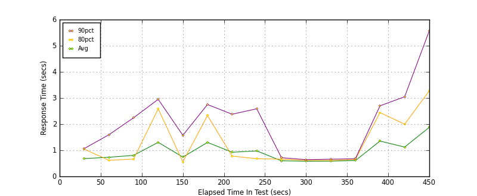
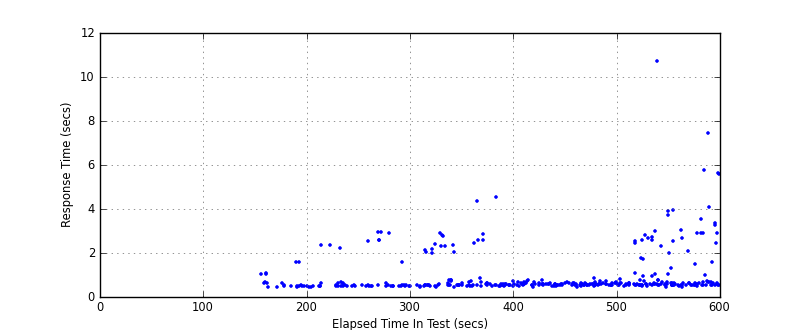

Performance Results Report
Summary
transactions: 680
errors: 0
run time: 600 secs
rampup: 600 secs
test start: 2012-02-28 14:09:50
test finish: 2012-02-28 14:17:15
time-series interval: 30 secs
workload configuration:
| group name | threads | script name |
|---|
| user_group-1 | 100 | mech_chat.py |
| user_group-2 | 100 | mech_chat.py |
| user_group-3 | 100 | mech_chat.py |
All Transactions
Transaction Response Summary (secs)
| count | min | avg | 80pct | 90pct | 95pct | max | stdev |
|---|
| 680 | 145.813 | 170.867 | 180.556 | 186.194 | 191.361 | 201.148 | 11.317 |
Interval Details (secs)
| interval | count | rate | min | avg | 80pct | 90pct | 95pct | max | stdev |
|---|
| 1 | 12 | 0.40 | 150.098 | 157.761 | 164.491 | 166.061 | 166.606 | 166.606 | 5.694 |
| 2 | 17 | 0.57 | 153.519 | 163.138 | 169.951 | 171.223 | 172.733 | 172.733 | 6.178 |
| 3 | 14 | 0.47 | 150.680 | 164.468 | 172.234 | 173.858 | 176.113 | 176.113 | 7.884 |
| 4 | 14 | 0.47 | 154.635 | 163.825 | 167.696 | 168.791 | 169.445 | 169.445 | 4.885 |
| 5 | 16 | 0.53 | 145.813 | 161.069 | 165.846 | 167.015 | 171.609 | 171.609 | 6.313 |
| 6 | 24 | 0.80 | 151.935 | 160.673 | 164.896 | 166.897 | 166.947 | 170.483 | 4.732 |
| 7 | 27 | 0.90 | 147.300 | 159.109 | 165.596 | 170.252 | 170.403 | 171.085 | 7.555 |
| 8 | 26 | 0.87 | 154.868 | 164.267 | 167.723 | 170.125 | 175.021 | 181.052 | 5.872 |
| 9 | 27 | 0.90 | 152.397 | 168.145 | 172.785 | 176.272 | 178.436 | 185.996 | 7.094 |
| 10 | 26 | 0.87 | 161.612 | 170.036 | 172.808 | 176.045 | 177.219 | 177.385 | 4.226 |
| 11 | 36 | 1.20 | 149.661 | 172.028 | 178.955 | 182.629 | 187.313 | 187.885 | 8.708 |
| 12 | 24 | 0.80 | 165.521 | 177.428 | 181.726 | 185.354 | 185.548 | 186.871 | 5.681 |
| 13 | 43 | 1.43 | 155.718 | 180.547 | 188.015 | 195.511 | 197.600 | 199.995 | 10.254 |
| 14 | 37 | 1.23 | 168.562 | 181.448 | 189.688 | 194.463 | 197.311 | 201.148 | 8.642 |
| 15 | 37 | 1.23 | 171.297 | 183.175 | 189.875 | 198.996 | 199.902 | 200.238 | 8.211 |
Graphs
Response Time: 30 sec time-series

Response Time: raw data (all points)

Throughput: 5 sec time-series

Custom Timer: Chat
Timer Summary (secs)
| count | min | avg | 80pct | 90pct | 95pct | max | stdev |
|---|
| 380 | 0.052 | 0.620 | 0.841 | 1.830 | 2.498 | 6.587 | 1.038 |
Interval Details (secs)
| interval | count | rate | min | avg | 80pct | 90pct | 95pct | max | stdev |
|---|
| 1 | 12 | 0.40 | 0.052 | 0.549 | 1.332 | 2.162 | 2.302 | 2.302 | 0.864 |
| 2 | 17 | 0.57 | 0.082 | 0.374 | 0.594 | 1.418 | 1.885 | 1.885 | 0.554 |
| 3 | 14 | 0.47 | 0.059 | 0.114 | 0.130 | 0.179 | 0.286 | 0.286 | 0.057 |
| 4 | 14 | 0.47 | 0.068 | 0.173 | 0.176 | 0.258 | 0.943 | 0.943 | 0.228 |
| 5 | 16 | 0.53 | 0.082 | 0.121 | 0.147 | 0.174 | 0.195 | 0.195 | 0.034 |
| 6 | 24 | 0.80 | 0.070 | 0.124 | 0.156 | 0.169 | 0.171 | 0.188 | 0.033 |
| 7 | 27 | 0.90 | 0.072 | 0.973 | 1.700 | 2.170 | 5.472 | 6.587 | 1.625 |
| 8 | 26 | 0.87 | 0.077 | 0.461 | 0.377 | 2.434 | 2.658 | 2.850 | 0.816 |
| 9 | 27 | 0.90 | 0.073 | 0.930 | 1.885 | 2.562 | 2.609 | 5.665 | 1.264 |
| 10 | 26 | 0.87 | 0.078 | 0.448 | 0.352 | 0.836 | 0.932 | 5.461 | 1.044 |
| 11 | 36 | 1.20 | 0.095 | 0.343 | 0.388 | 1.095 | 1.270 | 1.310 | 0.335 |
| 12 | 24 | 0.80 | 0.143 | 0.735 | 1.402 | 1.633 | 1.760 | 2.090 | 0.600 |
| 13 | 43 | 1.43 | 0.080 | 1.233 | 2.206 | 5.255 | 5.591 | 5.824 | 1.743 |
| 14 | 37 | 1.23 | 0.110 | 0.671 | 0.887 | 1.704 | 2.524 | 2.601 | 0.688 |
| 15 | 37 | 1.23 | 0.100 | 0.834 | 1.013 | 1.989 | 2.582 | 5.854 | 1.027 |
Graphs
Response Time: 30 sec time-series

Response Time: raw data (all points)

Throughput: 30 sec time-series

Custom Timer: Payment
Timer Summary (secs)
| count | min | avg | 80pct | 90pct | 95pct | max | stdev |
|---|
| 380 | 0.373 | 0.598 | 0.585 | 0.642 | 1.345 | 2.607 | 0.381 |
Interval Details (secs)
| interval | count | rate | min | avg | 80pct | 90pct | 95pct | max | stdev |
|---|
| 1 | 12 | 0.40 | 0.387 | 0.508 | 0.592 | 0.612 | 0.642 | 0.642 | 0.071 |
| 2 | 17 | 0.57 | 0.443 | 0.559 | 0.569 | 0.591 | 1.383 | 1.383 | 0.218 |
| 3 | 14 | 0.47 | 0.433 | 0.691 | 1.345 | 1.390 | 1.469 | 1.469 | 0.389 |
| 4 | 14 | 0.47 | 0.440 | 0.676 | 0.595 | 0.597 | 2.480 | 2.480 | 0.521 |
| 5 | 16 | 0.53 | 0.435 | 0.631 | 0.569 | 1.422 | 1.458 | 1.458 | 0.319 |
| 6 | 24 | 0.80 | 0.391 | 0.567 | 0.529 | 0.549 | 0.555 | 2.607 | 0.437 |
| 7 | 27 | 0.90 | 0.385 | 0.650 | 0.566 | 0.621 | 2.524 | 2.590 | 0.552 |
| 8 | 26 | 0.87 | 0.373 | 0.515 | 0.590 | 0.625 | 0.630 | 0.631 | 0.081 |
| 9 | 27 | 0.90 | 0.416 | 0.528 | 0.593 | 0.616 | 0.617 | 0.618 | 0.057 |
| 10 | 26 | 0.87 | 0.384 | 0.500 | 0.541 | 0.583 | 0.709 | 0.740 | 0.084 |
| 11 | 36 | 1.20 | 0.402 | 0.496 | 0.547 | 0.577 | 0.696 | 0.760 | 0.084 |
| 12 | 24 | 0.80 | 0.382 | 0.502 | 0.552 | 0.627 | 0.649 | 0.699 | 0.080 |
| 13 | 43 | 1.43 | 0.375 | 0.671 | 0.714 | 0.856 | 1.080 | 2.508 | 0.436 |
| 14 | 37 | 1.23 | 0.393 | 0.626 | 0.610 | 0.673 | 2.457 | 2.490 | 0.454 |
| 15 | 37 | 1.23 | 0.416 | 0.771 | 0.603 | 2.405 | 2.408 | 2.412 | 0.656 |
Graphs
Response Time: 30 sec time-series

Response Time: raw data (all points)

Throughput: 30 sec time-series

Custom Timer: Signup
Timer Summary (secs)
| count | min | avg | 80pct | 90pct | 95pct | max | stdev |
|---|
| 380 | 0.451 | 0.999 | 0.850 | 2.559 | 2.929 | 10.709 | 1.086 |
Interval Details (secs)
| interval | count | rate | min | avg | 80pct | 90pct | 95pct | max | stdev |
|---|
| 1 | 12 | 0.40 | 0.457 | 0.681 | 1.041 | 1.066 | 1.076 | 1.076 | 0.242 |
| 2 | 17 | 0.57 | 0.455 | 0.733 | 0.617 | 1.595 | 2.352 | 2.352 | 0.553 |
| 3 | 14 | 0.47 | 0.492 | 0.805 | 0.662 | 2.243 | 2.344 | 2.344 | 0.633 |
| 4 | 14 | 0.47 | 0.477 | 1.304 | 2.586 | 2.950 | 2.965 | 2.965 | 1.106 |
| 5 | 16 | 0.53 | 0.486 | 0.739 | 0.556 | 1.574 | 2.915 | 2.915 | 0.638 |
| 6 | 24 | 0.80 | 0.462 | 1.302 | 2.331 | 2.751 | 2.838 | 2.891 | 0.965 |
| 7 | 27 | 0.90 | 0.469 | 0.924 | 0.778 | 2.378 | 2.469 | 4.351 | 0.882 |
| 8 | 26 | 0.87 | 0.479 | 0.975 | 0.677 | 2.588 | 2.872 | 4.525 | 0.999 |
| 9 | 27 | 0.90 | 0.474 | 0.597 | 0.661 | 0.716 | 0.717 | 0.781 | 0.075 |
| 10 | 26 | 0.87 | 0.499 | 0.582 | 0.613 | 0.640 | 0.671 | 0.763 | 0.057 |
| 11 | 36 | 1.20 | 0.465 | 0.585 | 0.612 | 0.658 | 0.732 | 0.850 | 0.069 |
| 12 | 24 | 0.80 | 0.494 | 0.605 | 0.650 | 0.675 | 0.724 | 0.807 | 0.070 |
| 13 | 43 | 1.43 | 0.482 | 1.353 | 2.441 | 2.701 | 2.833 | 10.709 | 1.684 |
| 14 | 37 | 1.23 | 0.451 | 1.122 | 1.998 | 3.049 | 3.924 | 3.935 | 1.066 |
| 15 | 37 | 1.23 | 0.516 | 1.877 | 3.276 | 5.574 | 5.757 | 7.463 | 1.870 |
Graphs
Response Time: 30 sec time-series

Response Time: raw data (all points)

Throughput: 30 sec time-series